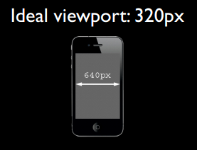
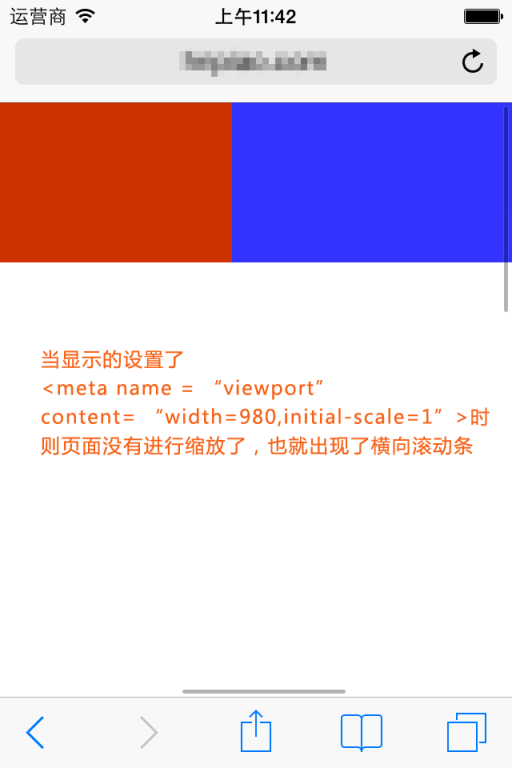
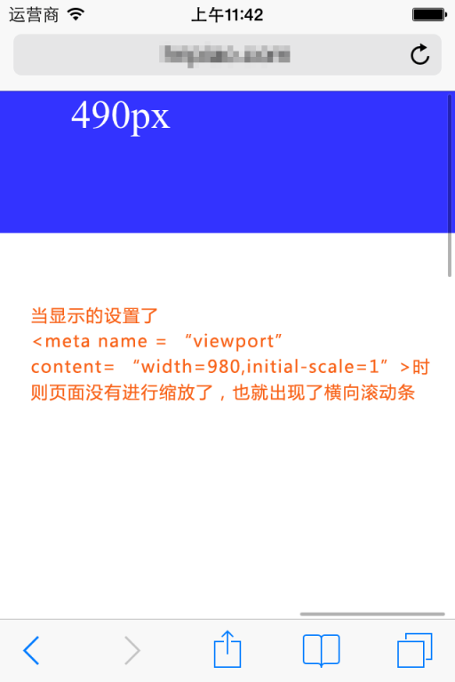

Al realizar la refactorización o el desarrollo de páginas web en dispositivos móviles, lo primero que hay que entender es el viewport en los dispositivos móviles. Solo comprendiendo el concepto de viewport y aclarando el uso de las etiquetas meta relacionadas con el viewport podremos hacer que nuestras páginas web se adapten o respondan mejor a los dispositivos móviles con diferentes resoluciones.
I. El concepto de viewport
En términos sencillos, el viewport en un dispositivo móvil es el área de la pantalla del dispositivo que se puede utilizar para mostrar nuestra página web. Más concretamente, es la parte del navegador (o de un webview dentro de una app) que se utiliza para mostrar la página web. Sin embargo, el viewport no se limita al tamaño del área visible del navegador; puede ser más grande o más pequeño que el área visible del navegador. Por defecto, en general, el viewport en los dispositivos móviles suele ser mayor que el área visible del navegador. Esto se debe a que, considerando que la resolución de los dispositivos móviles es relativamente menor en comparación con la de los ordenadores de escritorio, para poder mostrar correctamente en los dispositivos móviles los sitios web tradicionales diseñados para navegadores de escritorio, los navegadores de los dispositivos móviles establecen su viewport predeterminado en 980px o 1024px (también puede ser otro valor, decidido por el propio dispositivo). Pero la consecuencia es que el navegador tendrá una barra de desplazamiento horizontal, porque el ancho del área visible del navegador es menor que el ancho de este viewport predeterminado. La siguiente figura muestra los anchos de viewport predeterminados de los navegadores en algunos dispositivos.

II. En CSS, 1px no equivale a 1px del dispositivo
En CSS normalmente usamos px como unidad. En los navegadores de escritorio, 1 píxel de CSS suele corresponder a 1 píxel físico de la pantalla del ordenador, lo que puede crear la falsa impresión de que los píxeles de CSS son los píxeles físicos del dispositivo. Pero la realidad no es así; los píxeles en CSS son solo una unidad abstracta. En diferentes dispositivos o entornos, el píxel físico del dispositivo que representa 1px en CSS es distinto. En las páginas web diseñadas para navegadores de escritorio no necesitamos preocuparnos por esto, pero en los dispositivos móviles es imprescindible entenderlo. En los primeros dispositivos móviles, la densidad de píxeles de la pantalla era bastante baja, como el iPhone 3, cuya resolución era de 320x480. En el iPhone 3, un píxel de CSS era efectivamente igual a un píxel físico de la pantalla. Posteriormente, con el avance de la tecnología, la densidad de píxeles de las pantallas de los dispositivos móviles ha ido aumentando. Desde el iPhone 4, Apple lanzó la llamada pantalla Retina, duplicando la resolución a 640x960, pero sin cambiar el tamaño de la pantalla. Esto significa que en una pantalla del mismo tamaño hay el doble de píxeles, por lo que ahora un píxel de CSS equivale a dos píxeles físicos. Lo mismo ocurre con los dispositivos móviles de otras marcas. Por ejemplo, los dispositivos Android se pueden clasificar en diferentes niveles como ldpi, mdpi, hdpi, xhdpi, etc., según la densidad de píxeles de la pantalla, y las resoluciones también son muy variadas. A cuántos píxeles físicos de pantalla equivale un píxel de CSS en un dispositivo Android también varía según el dispositivo; no hay una conclusión fija.
Otro factor que también provoca cambios en los px de CSS es el escalado por parte del usuario. Por ejemplo, cuando el usuario amplía la página al doble, el píxel físico que representa 1px en CSS también aumenta al doble; por el contrario, si reduce la página a la mitad, el píxel físico que representa 1px en CSS también se reduce a la mitad. Sobre este punto se hablará más adelante en el artículo.
En los navegadores móviles y en algunos navegadores de escritorio, el objeto window tiene una propiedad devicePixelRatio, cuya definición oficial es: la proporción entre el píxel físico del dispositivo y el píxel independiente del dispositivo, es decir, devicePixelRatio = píxel físico / píxel independiente. Los px en CSS se pueden considerar como los píxeles independientes del dispositivo, por lo que a través de devicePixelRatio podemos saber a cuántos píxeles físicos equivale un píxel de CSS en ese dispositivo. Por ejemplo, en un iPhone con pantalla Retina, el valor de devicePixelRatio es 2, es decir, 1 píxel de CSS equivale a 2 píxeles físicos. Pero hay que tener en cuenta que devicePixelRatio todavía tiene algunos problemas de compatibilidad en diferentes navegadores, por lo que no podemos confiar completamente en ello. Para más detalles, puedes consultareste artículo。
Resultados de la prueba de devicePixelRatio:

III. La teoría de PPK sobre los tres viewports
El gurú ppkha realizado muchísimas investigaciones sobre el viewport en dispositivos móviles (Primera parte，Segunda parte，Tercera parte), si estás interesado, puedes echarles un vistazo. Muchos de los datos y puntos de vista de este artículo provienen de ahí. PPK considera que hay tres viewports en los dispositivos móviles.
En primer lugar, los navegadores de los dispositivos móviles consideran que deben poder mostrar todos los sitios web correctamente, incluso aquellos que no están diseñados para dispositivos móviles. Pero si se toma el área visible del navegador como viewport, como las pantallas de los dispositivos móviles no son muy anchas, los sitios web diseñados para navegadores de escritorio, al mostrarse en dispositivos móviles, inevitablemente se verán apretados debido a que el viewport del dispositivo móvil es demasiado estrecho, e incluso el diseño podría desordenarse. Alguien podría preguntar: ¿no hay ahora muchos teléfonos con resoluciones muy altas, como 768x1024 o 1080x1920? ¿No sería suficiente para mostrar sitios web diseñados para navegadores de escritorio? Ya hemos dicho antes que 1px en CSS no representa 1px en la pantalla; cuanto mayor sea la resolución, más píxeles físicos representará 1px en CSS y mayor será el valor de devicePixelRatio. Esto es fácil de entender: como la resolución ha aumentado pero el tamaño de la pantalla no ha variado mucho, es necesario que 1px en CSS represente más píxeles físicos para que lo que mide 1px tenga un tamaño similar en pantalla al de los dispositivos de baja resolución; de lo contrario, sería demasiado pequeño para verse claramente. Por lo tanto, en un dispositivo como el de 1080x1920, de forma predeterminada, quizás solo necesites establecer el ancho de un div en un poco más de 300px (según el valor de devicePixelRatio) para que ocupe todo el ancho de la pantalla. Volviendo al tema: si se toma el área visible del navegador del dispositivo móvil como viewport, algunos sitios web se mostrarían mal debido a que el viewport es demasiado estrecho. Por eso, estos navegadores decidieron establecer, por defecto, un valor más ancho para el viewport, como 980px. De este modo, incluso los sitios web diseñados para escritorio pueden mostrarse correctamente en los navegadores móviles. PPK llama a este viewport predeterminado del navegador 'layout viewport'. El ancho de este layout viewport se puede obtener mediante document.documentElement.clientWidth.
Sin embargo, el ancho del layout viewport es mayor que el ancho del área visible del navegador, por lo que también necesitamos un viewport que represente el tamaño del área visible del navegador. PPK llama a este viewport 'visual viewport'. El ancho del visual viewport se puede obtener mediante window.innerWidth, pero en Android 2, Oprea mini y UC 8 no se puede obtener correctamente.

Ahora ya tenemos dos viewports: el layout viewport y el visual viewport. Pero el navegador considera que no son suficientes, porque cada vez más sitios web se diseñan específicamente para dispositivos móviles, por lo que es necesario tener un viewport que se adapte perfectamente a los dispositivos móviles. La llamada adaptación perfecta significa, en primer lugar, que no se necesita que el usuario haga zoom ni que aparezcan barras de desplazamiento horizontales para ver correctamente todo el contenido del sitio; en segundo lugar, que el tamaño del texto mostrado sea adecuado. Por ejemplo, un texto de 14px no debe ser tan pequeño que no se pueda leer en una pantalla de alta densidad de píxeles. Lo ideal es que este texto de 14px se muestre con un tamaño similar en cualquier densidad de pantalla y cualquier resolución. Por supuesto, no solo el texto, sino también otros elementos como imágenes siguen el mismo principio. PPK llama a este viewport 'ideal viewport', es decir, el tercer viewport: el viewport ideal del dispositivo móvil.
El ideal viewport no tiene un tamaño fijo; diferentes dispositivos tienen diferentes ideal viewports. El ancho del ideal viewport de todos los iPhone es 320px, sin importar si el ancho de su pantalla es 320 o 640. Es decir, en un iPhone, 320px en CSS representan el ancho de la pantalla del iPhone.


Pero los dispositivos Android son más complicados: hay de 320px, de 360px, de 384px, etc. Para saber cuál es el ancho del ideal viewport en diferentes dispositivos, puedes ir ahttp://viewportsizes.compara consultarlo; allí se han recopilado los anchos ideales de numerosos dispositivos.
Resumiendo:ppk divide el viewport en dispositivos móviles en tres tipos: layout viewport, visual viewport e ideal viewport. Entre ellos, ideal viewport es el viewport más adecuado para dispositivos móviles. El ancho de ideal viewport es igual al ancho de pantalla del dispositivo móvil. Siempre que en CSS establezcas el ancho de un elemento como el ancho de ideal viewport (en px), el ancho de ese elemento será el ancho de pantalla del dispositivo, es decir, el efecto de un ancho del 100%. El significado de ideal viewport es que, sin importar la resolución de la pantalla, los sitios web diseñados para ideal viewport pueden presentarse perfectamente al usuario sin necesidad de que este haga zoom manualmente ni de que aparezca una barra de desplazamiento horizontal.
IV. Uso de la etiqueta meta para controlar el viewport
El viewport predeterminado en los dispositivos móviles es el layout viewport, es decir, ese viewport que es más ancho que la pantalla. Sin embargo, al desarrollar sitios web para dispositivos móviles, lo que necesitamos es el ideal viewport. Entonces, ¿cómo se obtiene el ideal viewport? Ahí es donde entra la etiqueta meta.
Al desarrollar sitios web para dispositivos móviles, una de las acciones más comunes es copiar lo siguiente dentro de nuestra etiqueta head:
<meta name="viewport" content="width=device-width, initial-scale=1.0, maximum-scale=1.0, user-scalable=0">
La función de esta etiqueta meta es hacer que el ancho del viewport actual sea igual al ancho del dispositivo y, al mismo tiempo, no permitir que el usuario haga zoom manualmente. Quizás permitir o no el zoom tenga diferentes requisitos según el sitio web, pero hacer que el ancho del viewport sea igual al ancho del dispositivo debería ser un efecto que todos quieren. Si no lo configuras así, se usará el viewport predeterminado, que es más ancho que la pantalla, lo que significa que aparecerá una barra de desplazamiento horizontal.
Esta etiqueta meta con name="viewport", ¿qué contiene exactamente y qué funciones tiene cada cosa?
La etiqueta meta viewport fue introducida primero por Apple en su navegador Safari, con el objetivo de resolver el problema del viewport en los dispositivos móviles. Más tarde, Android y los principales fabricantes de navegadores también siguieron su ejemplo e incorporaron soporte para meta viewport. Los hechos han demostrado que es muy útil.
En la especificación de Apple, meta viewport tiene 6 atributos (por ahora llamemos a esas cosas dentro de content atributos y valores), como sigue:
| width | Establecelayout viewportel ancho, un número entero positivo, o la cadena "width-device" |
| initial-scale | Establece el valor de zoom inicial de la página, un número, puede tener decimales |
| minimum-scale | El valor de zoom mínimo permitido para el usuario, un número, puede tener decimales |
| maximum-scale | El valor de zoom máximo permitido para el usuario, un número, puede tener decimales |
| height | Establecelayout viewportla altura, este atributo no es importante para nosotros y se usa muy poco |
| user-scalable | Si se permite al usuario hacer zoom, el valor es "no" o "yes"; no significa que no se permite, yes significa que se permite |
Estos atributos pueden usarse al mismo tiempo, por separado o de forma mixta. Cuando se usan varios atributos a la vez, basta con separarlos con comas.
Además, en Android también se admite el atributo privado target-densitydpi, que indica el nivel de densidad del dispositivo objetivo, y su función es determinar cuántos píxeles físicos representa 1px en CSS.
| target-densitydpi | El valor puede ser un número o una de las cadenas high-dpi, medium-dpi, low-dpi, device-dpi. |
Cabe señalar especialmente que, cuando target-densitydpi=device-dpi, 1px en CSS equivale a 1px en píxeles físicos.
Debido a que este atributo solo es compatible con Android, y Android ya ha decidido desaprobarlo,target-densitydpieste atributo, por lo tanto, debemos evitar usarlo.
V. Establecer el ancho actual del viewport como el ancho del ideal viewport
Para obtener ideal viewport es necesario establecer el ancho del layout viewport predeterminado como el ancho de pantalla del dispositivo móvil. Debido a que width en meta viewport puede controlar el ancho del layout viewport, solo necesitamos establecer width con el valor especial width-device.
<meta name="viewport" content="width=device-width">
La siguiente figura muestra los resultados de prueba de esta línea de código en los principales navegadores móviles:

Se puede ver que, mediante width=device-width, todos los navegadores pueden convertir el ancho del viewport actual en el ancho de ideal viewport. Pero hay que tener en cuenta que, en iPhone y iPad, ya sea en orientación vertical u horizontal, el ancho es siempre el ancho de ideal viewport en orientación vertical.
Esta forma de escribir parece que cualquiera puede hacerla; aunque no hayas comido carne de cerdo, ¿quién no ha visto correr a un cerdo? Ciertamente, al desarrollar páginas web para dispositivos móviles, entiendas o no qué es el viewport, probablemente solo necesites esta línea de código.
Pero seguro que no sabes que
<meta name="viewport" content="initial-scale=1">
esta línea de código también puede lograr el mismo efecto que la línea anterior, y también puede convertir el viewport actual en ideal viewport.
Jeje, te has quedado atónito, porque desde un punto de vista teórico, el efecto de esta línea de código es solo no hacer zoom en la página actual, es decir, la página debería tener el tamaño que le corresponda. Entonces, ¿por qué tiene el efecto de width=device-width?
Para entender esto, primero debes aclarar respecto a qué se realiza el zoom. Como aquí el valor de zoom es 1, es decir, sin zoom, pero se logra el efecto de ideal viewport, entonces solo hay una respuesta: el zoom se realiza en relación con ideal viewport. Cuando se aplica un zoom del 100% a ideal viewport, es decir, cuando el valor de zoom es 1, ¿no se obtiene ideal viewport? Los hechos demuestran que efectivamente es así. La siguiente figura muestra, en los principales navegadores móviles, cuándo se establece<meta name="viewport" content="initial-scale=1">, los resultados de prueba sobre si pueden convertir el ancho del viewport actual en el ancho de ideal viewport.

Los resultados de las pruebas muestran que initial-scale=1 también puede convertir el ancho del viewport actual en el ancho de ideal viewport. Pero esta vez le tocó a IE en Windows Phone: tanto en orientación vertical como horizontal, establece el ancho como el ancho de ideal viewport en orientación vertical. Pero este pequeño defecto ya no es relevante.
¿Pero qué pasa si width e initial-scale=1 aparecen al mismo tiempo y además hay un conflicto? Por ejemplo:
<meta name="viewport" content="width=400, initial-scale=1">
width=400 significa establecer el ancho del viewport actual en 400px; initial-scale=1 significa establecer el ancho del viewport actual en el ancho de ideal viewport. Entonces, ¿a qué orden debe obedecer el navegador? ¿A la que aparece después en el orden de escritura? No. Cuando se encuentra con esta situación, el navegador toma el valor mayor de los dos. Por ejemplo, cuando width=400 y el ancho de ideal viewport es 320, toma 400; cuando width=400 y el ancho de ideal viewport es 480, toma el ancho de ideal viewport. (Nota: en el navegador UC9, cuando initial-scale=1, sin importar el valor del atributo width, el ancho del viewport siempre es el ancho de ideal viewport).
Finalmente, para resumir: para establecer el ancho del viewport actual como el ancho de ideal viewport, se puede configurar width=device-width o initial-scale=1, pero cada uno tiene un pequeño defecto: iPhone, iPad e IE no distinguen entre orientación vertical y horizontal, y todos toman como referencia el ancho de ideal viewport en orientación vertical. Por lo tanto, la forma más perfecta es escribir ambos; así, initial-scale=1 resuelve el problema de iPhone y iPad, y width=device-width resuelve el problema de IE:
<meta name="viewport" content="width=device-width, initial-scale=1">
VI. Más conocimientos sobre meta viewport
1. Sobre el escalado y el valor predeterminado de initial-scale
Primero, discutamos el problema del zoom. Como se mencionó anteriormente, el zoom se realiza en relación con ideal viewport. Cuanto mayor sea el valor de zoom, menor será el ancho del viewport actual, y viceversa. Por ejemplo, en iPhone, el ancho de ideal viewport es 320px. Si establecemos initial-scale=2, el ancho del viewport se reduce a solo 160px. Esto es fácil de entender: se ha ampliado al doble, es decir, lo que originalmente era 1px ahora se convierte en 2px. Pero que 1px se convierta en 2px no significa que los 320px originales se conviertan en 640px; más bien, con el ancho real sin cambios, 1px se vuelve tan largo como los 2px originales. Por lo tanto, después de ampliar al doble, el ancho que antes necesitaba 320px para llenarse ahora solo necesita 160px. Así, podemos obtener una fórmula:
visual viewport宽度 = ideal viewport宽度 / 当前缩放值 当前缩放值 = ideal viewport宽度 / visual viewport宽度
ps:El ancho de visual viewport se refiere al ancho del área visible del navegador.
La mayoría de los navegadores se ajustan a esta teoría, pero el navegador nativo de Android e IE tienen algunos problemas. El navegador webkit integrado en Android solo se comporta con normalidad cuando initial-scale = 1 y no se ha establecido el atributo width, lo que equivale a que esta teoría básicamente no sirve en él; e IE ignora por completo el atributo initial-scale, no importa lo que le establezcas, el efecto que muestra initial-scale siempre es 1.
Bien, ahora volvamos a hablar del problema del valor predeterminado de initial-scale, es decir, cuando no se escribe este atributo, ¿cuál será su valor predeterminado? Obviamente no será 1, porque cuando initial-scale = 1, el ancho del layout viewport actual se establecerá en el ancho del ideal viewport, pero como se dijo antes, los anchos predeterminados del layout viewport en los navegadores suelen ser valores como 980, 1024, 800, etc., y no hay uno que desde el principio sea el ancho del ideal viewport, por lo que el valor predeterminado de initial-scale definitivamente no es 1. En dispositivos Android, parece que no hay manera de obtener el valor predeterminado de initial-scale, o quizás simplemente no tiene un valor predeterminado; solo tendrá efecto si lo escribes explícitamente. No nos preocupemos por eso, aquí nos centramos en el valor predeterminado de initial-scale en iPhone y iPad.
Según las pruebas, podemos llegar a una conclusión en iPhone y iPad: sin importar el ancho que le asignes al layout viewport, si no se especifica el valor de escala inicial, iPhone y iPad calcularán automáticamente el valor de initial-scale para garantizar que el ancho del layout viewport actual, después del escalado, sea igual al ancho del área visible del navegador, es decir, que no aparezca una barra de desplazamiento horizontal. Por ejemplo, en iPhone, si no configuramos ninguna etiqueta meta viewport, el ancho del layout viewport es de 980px, pero podemos ver que el navegador no muestra una barra de desplazamiento horizontal; el navegador reduce la página de forma predeterminada. Según la fórmula anterior,Valor de escala actual = ancho del ideal viewport / ancho del visual viewport, podemos obtener:
当前缩放值 = 320 / 980
Es decir, el valor predeterminado de initial-scale en este caso debería ser algo así como 0.33. Cuando especificas el valor de initial-scale, este valor predeterminado deja de tener efecto.
En resumen, solo recuerda esta conclusión: en iPhone y iPad, sin importar el ancho que establezcas para el viewport, si no se especifica el valor de escala predeterminado, entonces iPhone y iPad calcularán automáticamente este valor de escala para lograr que la página actual no tenga barra de desplazamiento horizontal (o, en otras palabras, que el ancho del viewport sea igual al ancho de la pantalla).



2. Cambiar dinámicamente la etiqueta meta viewport
Primer método
Puedes usar document.write para generar dinámicamente la etiqueta meta viewport, por ejemplo:
document.write('<meta name="viewport" content="width=device-width,initial-scale=1">')
Segundo método
Cambiarlo mediante setAttribute
<meta id="testViewport" name="viewport" content="width = 380">
<script>
var mvp = document.getElementById('testViewport');
mvp.setAttribute('content','width=480');
</script>
Un bug en el navegador integrado de Android 2.3
<meta name="viewport" content="width=device-width"> <script type="text/javascript"> alert(document.documentElement.clientWidth); //弹出600，正常情况应该弹出320 </script> <meta name="viewport" content="width=600"> <script type="text/javascript"> alert(document.documentElement.clientWidth); //弹出320，正常情况应该弹出600 </script>
El ancho del ideal viewport del teléfono de prueba era de 320px. El primer valor que apareció fue 600, pero este valor debería ser el resultado de la meta etiqueta de la segunda línea; luego el segundo valor que apareció fue 320, y ese es el efecto que debería lograr la primera meta etiqueta. Por lo tanto, en el navegador integrado de Android 2.3 (quizás en todas las versiones 2.x), al sobrescribir o modificar la etiqueta meta viewport, se obtienen resultados muy confusos.
VII. Conclusión
Después de tanta charla inútil, al final es necesario resumir algo útil.
Primero, si no se establece la etiqueta meta viewport, el ancho predeterminado del navegador en dispositivos móviles será de 800px, 980px, 1024px, etc.; en resumen, es mayor que el ancho de la pantalla. La unidad px utilizada para el ancho aquí se refiere al px del CSS, que no es lo mismo que el px que representa los píxeles físicos reales de la pantalla.
Segundo, cada navegador de dispositivo móvil tiene un ancho ideal; este ancho ideal se refiere al ancho en CSS y no tiene relación con el ancho físico del dispositivo. En CSS, este ancho equivale al ancho que representa el 100%. Podemos usar la etiqueta meta para establecer el ancho del viewport en ese ancho ideal; si no sabes cuál es el ancho ideal del dispositivo, basta con usar el valor especial device-width. Al mismo tiempo, initial-scale=1 también tiene el efecto de establecer el ancho del viewport como el ancho ideal. Por lo tanto, podemos usar
<meta name="viewport" content="width=device-width, initial-scale=1">
para obtener un viewport ideal (es decir, el ideal viewport mencionado anteriormente).
¿Por qué se necesita un viewport ideal? Por ejemplo, un teléfono con resolución de 320x480 tiene un ancho del ideal viewport de 320px, y otro teléfono con el mismo tamaño de pantalla pero resolución de 640x960 también tiene un ancho del ideal viewport de 320px. ¿Entonces por qué el ancho ideal del teléfono con mayor resolución debería ser igual al ancho ideal del teléfono con menor resolución? Esto se debe a que solo así se puede garantizar que el mismo sitio web se vea igual o muy parecido en dispositivos con diferentes resoluciones. En realidad, aunque en el mercado hay tantos teléfonos de diferentes tipos, marcas y resoluciones, sus anchos de ideal viewport se resumen, en definitiva, en unos pocos valores: 320, 360, 384, 400, etc., todos muy cercanos entre sí. La similitud de los anchos ideales significa que un sitio web diseñado para el ideal viewport de un dispositivo determinado no se verá muy diferente, o incluso se verá igual, en otros dispositivos.
Dirección del artículo original: https://www.cnblogs.com/2050/p/3877280.html
Haz clic para compartir notas
<p style="font-size:14px;">¡La nota debe ser una extensión del contenido de este artículo!</p><br> <p style="font-size:12px;"><a href="../tougao.html" target="_blank">Para enviar artículos, puedes hacer clic aquí</a></p> <p style="font-size:14px;"><a href="./runoob-user-test-intro.html" target="_blank">Cómo obtener el código de invitación de registro</a></p> <h3 class="text-muted"><i class="fa fa-info-circle" aria-hidden="true"></i> Antes de compartir notas, debes <a href=".." class="runoob-pop">iniciar sesión</a>!</h3> <p><a href="./runoob-user-test-intro.html" target="_blank">Cómo obtener el código de invitación de registro</a></p>